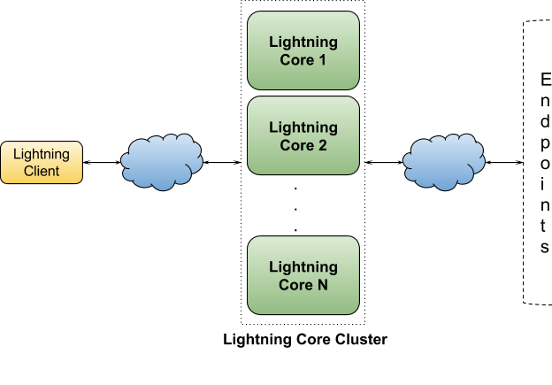
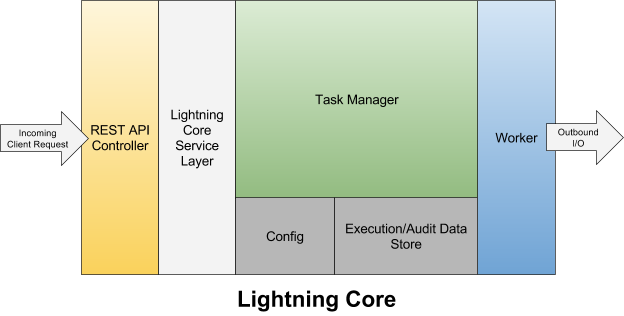
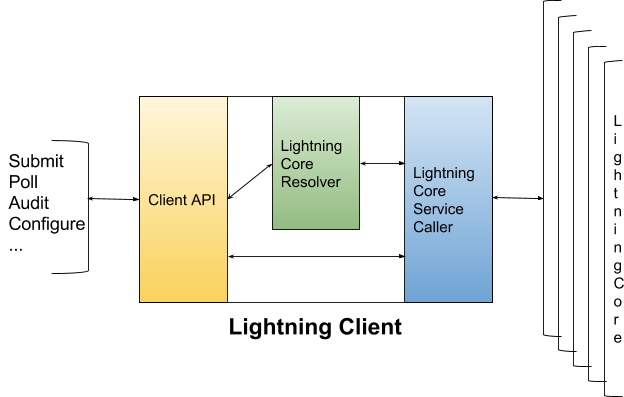

Lightning comprises of two major component: Lightning-Core and Lightning-Client. Restful communication between client and core is abstracted from the end user. End user employs lightning client to perform all operations. Lightning core hosts a bunch of RESTful services to support all client operations like request submission, result polling, config management, audit etc. For each operation, clients first resolve the most suitable core followed by the service call.
Lightning-Core is the URL execution engine. Prime Responsibilities of Core are as follows:
There can be multiple cores in the cluster. Adding more core machine is easy. Just add it to the seed list in the client builder. They can be swapped in and out any time during system is in use which gives the scalability to the system.
Lighting-Client is used by end user to send execution request, poll result, make system config changes, etc. It is used to submit the request to the core and poll the response back.It can also manage the multiple instances of core.
